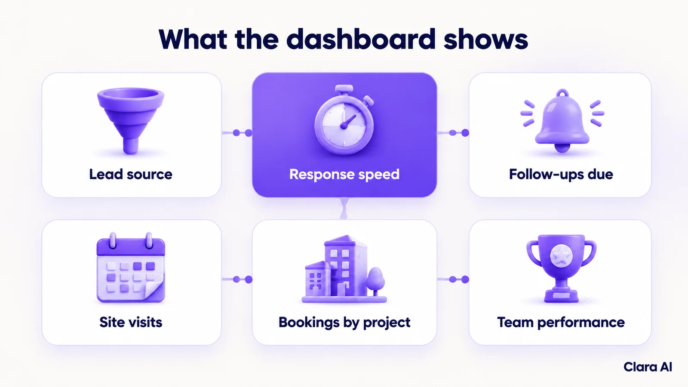
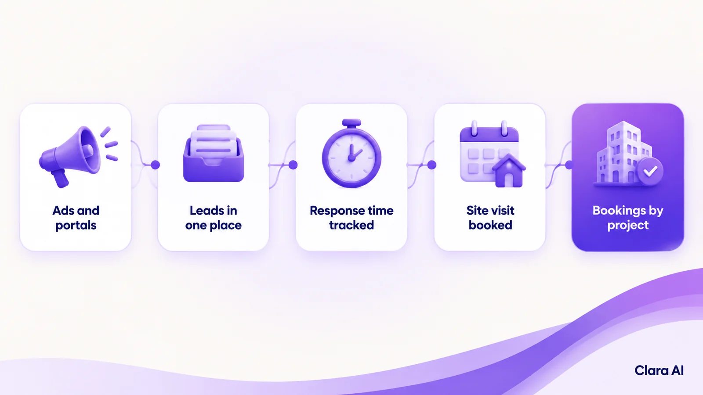

A real estate sales dashboard is one live screen that pulls leads, follow-ups, site visits and bookings from your CRM, ad accounts and call logs, and shows them by project, source and salesperson. It shows which sources bring real buyers and which leads nobody has called, so managers act the same day.
It is late evening in Dubai. A buyer enquires about a villa on a property portal. Another taps an Instagram ad and lands on WhatsApp. A third visits the sales gallery and is typed into a spreadsheet. The next morning, the marketing head asks which source brings real buyers. Nobody can say.
Developers and brokerages in the UAE and Saudi Arabia run several projects at once. Leads arrive from ads, portals, WhatsApp, calls and walk-ins, and each lands in a different place.
A good dashboard answers the questions a sales head asks every morning, and it can be filtered by project, source and salesperson.

A spreadsheet is typed by hand and a CRM report shows only what is in the CRM. A live dashboard joins several sources and updates as work happens.
| Spreadsheet | CRM report | Live sales dashboard | |
|---|---|---|---|
| Data sources | One, typed in | The CRM only | CRM, ad accounts and call logs together |
| Freshness | As current as the last edit | Run on request | Updates continuously |
| Source and campaign view | Manual matching | Limited to what the CRM captures | Source and project side by side |
| Slow follow-ups flagged | No | Rarely | Yes, through response-time rules |
| Upkeep | High, by hand | Moderate | Low once built |
Your CRM stays in place. The dashboard sits on top of it.
Your sales head agrees a target for the first contact on each type of lead. The dashboard checks every new lead against it. When a lead passes the target without a call or message, it is flagged and an alert goes to a named person. Over time, the same data shows which sources, projects or shifts are slowest. A response-time rule only flags. People decide what to do next.

The dashboard shows where to look. Managers and salespeople act. Team views are agreed with your sales head and are meant for coaching, not for ranking people. Access follows the role: a salesperson sees their own leads, a project head sees a project and leadership sees all. In Saudi Arabia, the Personal Data Protection Law (PDPL) governs personal data, so we limit who sees customer details and review that setting with you.
A dashboard is only as honest as the data behind it. If first contact is slow, it shows form fills, not conversations. An AI calling agent can phone new enquiries within minutes. A WhatsApp chatbot can reply at once to ad clicks. Both write each conversation to the same record, so the dashboard shows real conversations and where each lead stands.
Clara AI's chatbots and calling agents work in Arabic, English and Hindi.
Clara AI built a CRM and ads dashboard for Arihant Spaces, a real estate developer. It tracks leads across the developer's projects, with a response-time (SLA) rule engine that flags slow follow-ups. Clara AI also runs a presales calling agent for Rustomjee, another real estate developer. We don't publish client results here. See our client work.
Clara AI builds, deploys and manages operations intelligence dashboards in six steps. For the retail version of the idea, see our guide to an operations intelligence dashboard for multi-branch retail.